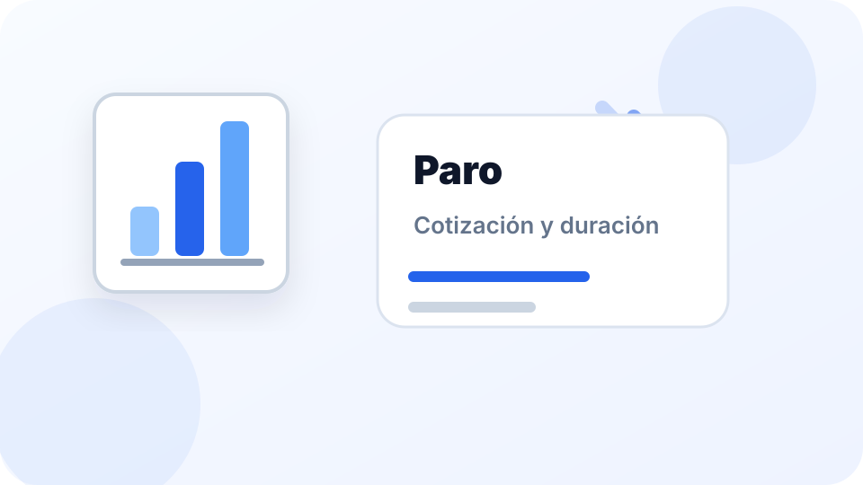

Cuántos meses de paro me corresponden

Lo importante
- La duración del paro depende principalmente de los días cotizados.
- La cuantía depende de la base reguladora y puede estar limitada por topes.
- No basta con mirar el último salario: cuentan las cotizaciones previas.
- Una baja voluntaria no suele permitir cobrar el paro de forma inmediata.
Qué determina cuántos meses de paro puedes cobrar
La prestación contributiva por desempleo se calcula a partir de varios elementos. El más visible es el tiempo cotizado, pero también influyen la base reguladora, la situación familiar y los topes aplicables.
Por eso dos personas con salarios parecidos pueden tener resultados distintos si han cotizado durante periodos diferentes o si sus bases no son iguales.
Días cotizados y duración orientativa
Como regla general, a partir de 360 días cotizados puede generarse derecho a prestación contributiva, siempre que se cumplan el resto de requisitos.
La duración máxima puede llegar a 24 meses cuando existen cotizaciones suficientes. Para una estimación rápida, lo más práctico es usar una calculadora y después contrastar el resultado con la información oficial o con asesoramiento laboral.
Duración no es lo mismo que cuantía
Una cosa es durante cuántos meses puedes cobrar el paro y otra distinta cuánto cobrarás cada mes. La duración depende del tiempo cotizado. La cuantía depende de la base reguladora y de los porcentajes aplicables.
No confundas “meses de paro” con “importe mensual del paro”. Son cálculos relacionados, pero distintos.
Ejemplo práctico
Imagina una persona que ha trabajado varios años y ha acumulado suficientes días cotizados. En ese caso puede tener derecho a prestación contributiva durante más meses que una persona que solo ha cotizado el mínimo necesario.
Después, la cantidad mensual dependerá de sus bases de cotización. Una persona con bases más altas puede cobrar más, pero siempre dentro de los límites mínimos y máximos correspondientes.
Casos que pueden cambiar el resultado
- Baja voluntaria: normalmente no permite acceder al paro de forma inmediata.
- Contratos parciales: pueden influir en bases y cálculos.
- Trabajos encadenados: conviene revisar qué cotizaciones se han consumido y cuáles quedan disponibles.
- Situación familiar: puede afectar a topes mínimos y máximos.
¿Quién tiene derecho a cobrar el paro?
Para acceder a la prestación contributiva por desempleo no basta con haber trabajado. Como regla general, deben cumplirse varios requisitos al mismo tiempo.
- Encontrarse en situación legal de desempleo.
- Haber cotizado el tiempo mínimo exigido.
- Estar inscrito como demandante de empleo.
- Mantener la disponibilidad para buscar empleo y participar en acciones de inserción cuando corresponda.
- No encontrarse en una situación incompatible con la prestación.
Cumplir uno de estos requisitos no garantiza automáticamente el acceso a la prestación. Lo relevante es que el conjunto de condiciones encaje con el caso concreto.
Cómo se calcula la duración del paro
La duración de la prestación está relacionada con los días cotizados acumulados. La lógica general es sencilla: cuanto más tiempo se ha cotizado, mayor puede ser la duración de la prestación, siempre dentro de los límites establecidos.
Por eso dos personas con salarios parecidos pueden tener duraciones distintas si una ha cotizado durante más tiempo que la otra.
Antes de sacar conclusiones, revisa tu vida laboral y utiliza la calculadora de paro como estimación inicial.
Cómo se calcula la cuantía del paro
La cuantía y la duración no son lo mismo. La duración depende principalmente del tiempo cotizado. La cuantía depende de factores como la base reguladora, las bases de cotización anteriores y los límites mínimos y máximos aplicables.
- Base reguladora: sirve como referencia para calcular la prestación.
- Bases de cotización: influyen en el importe final.
- Topes mínimos y máximos: pueden limitar la cantidad mensual.
- Situación familiar: puede influir en determinados límites.
Por eso dos personas con la misma duración de prestación pueden recibir cantidades mensuales diferentes.
Ejemplo completo
Imagina una persona que ha trabajado durante varios años, ha acumulado cotizaciones suficientes y tiene una base de cotización estable.
En ese escenario podría tener derecho a una prestación contributiva durante varios meses. La duración dependerá de los días cotizados acumulados y la cuantía mensual dependerá de las bases de cotización y de los límites aplicables.
Este ejemplo muestra por qué no basta con preguntar “cuántos meses me corresponden”. También conviene estimar cuánto podrías cobrar cada mes.
Errores frecuentes
- Pensar que el paro depende únicamente del último salario.
- Confundir subsidio con prestación contributiva.
- Creer que una baja voluntaria genera derecho inmediato al paro.
- No revisar las cotizaciones acumuladas.
- Usar cálculos antiguos o desactualizados.
- No comprobar si existe situación legal de desempleo.
Checklist antes de solicitar el paro
- Revisar la vida laboral.
- Comprobar cotizaciones acumuladas.
- Revisar la situación legal de desempleo.
- Preparar la documentación necesaria.
- Verificar fechas y plazos.
- Usar una estimación orientativa de duración y cuantía.
Preguntas frecuentes
¿Con 360 días cotizados puedo cobrar paro?
Como regla general, 360 días pueden generar derecho a prestación contributiva, si se cumplen el resto de requisitos.
¿Cuánto tiempo máximo puedo cobrar?
La duración máxima puede llegar a 24 meses si existen cotizaciones suficientes.
¿La cuantía depende del último sueldo?
No exactamente. Depende de las bases reguladoras y de los límites aplicables.
¿Una baja voluntaria da derecho a paro?
Normalmente no de forma inmediata. Debe existir una situación legal de desempleo posterior.
¿Puedo usar una calculadora como resultado definitivo?
No. Sirve como orientación, pero el resultado oficial depende de los datos reconocidos por el SEPE.
¿Qué ocurre si he trabajado a tiempo parcial?
Las cotizaciones y bases pueden influir en el cálculo final. Conviene revisar cada situación de forma individual.
¿Puedo cobrar el paro y trabajar al mismo tiempo?
Existen situaciones específicas en las que puede ser compatible o parcialmente compatible. Depende de cada caso.
¿Qué pasa si encuentro trabajo mientras cobro el paro?
La prestación puede verse suspendida, modificada o extinguida según las circunstancias.
¿Se pierde el paro acumulado?
No necesariamente. Depende de la situación concreta y de cómo se gestionen las cotizaciones y prestaciones.
¿Dónde puedo consultar mis cotizaciones?
La vida laboral es una de las herramientas más útiles para comprobar periodos cotizados y situación laboral.
¿Qué diferencia hay entre paro y subsidio?
Son prestaciones distintas, con requisitos, duración y características diferentes.